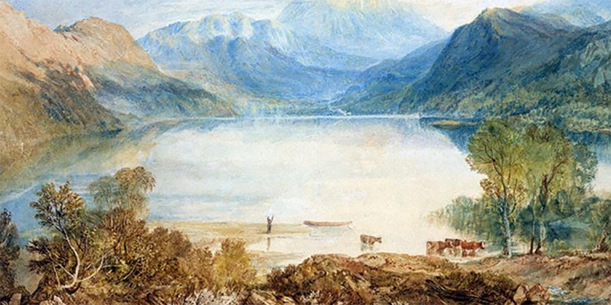
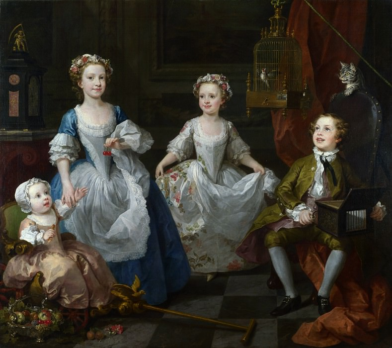
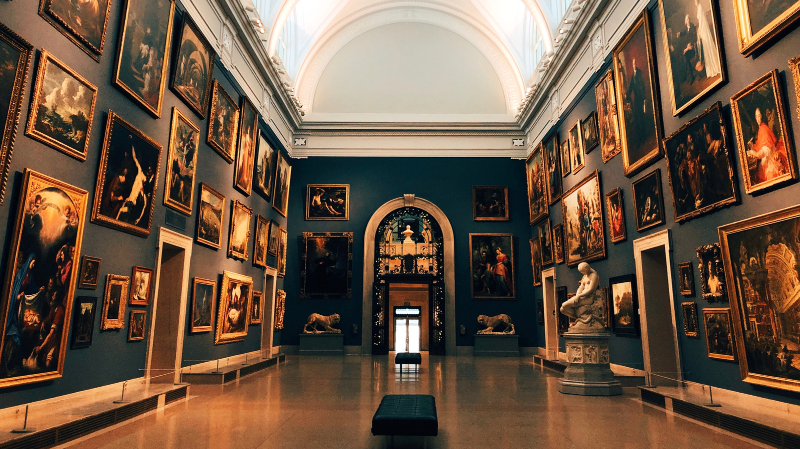

Welcome to my blog
By Alexandra Csizmadia, Posted on 27.02.2025
My day as a computer science student usually starts early.
After a quick breakfast, I head to campus for morning lectures on
topics like algorithms or software engineering. Between classes, I
grab a coffee and review my notes to stay on top of assignments. The
morning is all about learning new concepts and preparing for the day ahead.
In the afternoon, I focus on hands-on work, like coding labs or group projects.
This is when I dive into programming assignments, debug code, or collaborate with
classmates. Lunch breaks are short but give me a chance to recharge and chat with
friends about tech or coursework. The afternoon is my most productive time, filled
with problem-solving and creativity.
By evening, I’m back at my laptop, finishing assignments or working on personal
projects. Sometimes I’m up late debugging code or preparing for exams, but there’s
a real sense of accomplishment when everything finally works. After a long day of
learning and coding, I head to bed, ready to do it all again tomorrow.
A Short History of British Art - Part 1
By Alexandra Csizmadia, Posted on 27.02.2025

British Art is rather a large subject, so to narrow it down, this paper covers
the field of visual arts (paintings) during the 18th, 19th, and 20th century.
However, this is still a vast subject which implies multiple art movements and
even more important artists, some of which were lost throughout history.
The techniques used by the artists also developed rapidly, some of them remaining
specific to certain movements and styles.
On top of all, the painters were influenced by other fellow artists and by some
specific circumstances, such as the viewer’s requests or the art movement
(concepts). Some artists have studied intensively the ones that were before them,
learning how to achieve, at least, the same performance as their ascensores.
All those art movements and views upon art left a mark on our society and, whether
we like it or not, influenced the way a piece of art is viewed.
A Short History of British Art - Part 2 - Rococo
By Alexandra Csizmadia, Posted on 27.02.2025

The Rococo style usually illustrates scenes of youth, love, nature, elicits motion
and drama. It is light and airy, focused on the delicate and decorative. The paintings
done in this style usually tell a story and the nature and statues from the scenery
take part in it, sometimes hiding essential parts of it or adding hidden meanings.
The work that best represents this movement is The Swing by Jean-Honoré Fragonard.
Some English painters who took part in this movement are William Hogarth,
Thomas Gainsborough, and Richard Wilson.
William Hogarth
William Hogarth was born in London, 1697. His life was a constant fight to secure a
decent position in the English society for artists, which he did, and many artists of
his time were grateful for his sacrifices. Hogarth is best known for his moral and
satirical engravings and paintings, and he is also considered the most important English
painter of this time and a remarkable figure of English Rococo.
It is safe to say that he played an important role in securing British art a page in all
art history books.
Some of his works are:
- The Graham Children
- Strolling Actresses Dressing in a Barn
- The Wedding of Stephen Beckingham and Mary Cox
A Day in My Life: Balancing Code, Creativity, and Coffee
By Alexandra Csizmadia, Posted on 28.02.2025
Mornings start with a cup of coffee, the essential fuel for the day ahead. I take a moment to wake up properly,
sometimes with a bit of reading or just enjoying the quiet before diving into university work. As a computer science
student, my mornings often involve tackling mathematical logic exercises or working on coding assignments in C++, C#,
or Python. Whether it’s debugging a stubborn piece of code or studying abstract syntax trees, my brain is fully engaged
from the start.
By midday, I shift between lectures and self-study, sometimes squeezing in a bit of game development in Unity or
xploring new ways to improve my skills. When my energy dips, I make time for self-care—maybe a quick skincare routine
or a snack break to reset. Since I don’t particularly enjoy the gym, I try to stay active in other ways, like walking
while listening to a podcast or stretching between study sessions.
Afternoons are my creative escape. If time allows, I pick up a paintbrush or sketch something, letting my mind wander
away from the logic-heavy parts of my day. Balancing my love for both computer science and art isn’t always easy, but
I find that having an outlet for creativity makes me a better problem solver. Some days, I dive into a book instead,
enjoying the chance to disconnect from screens and immerse myself in a different world.
As the evening rolls in, I wind down with either a video game or some light project work, depending on my mood. I
tend to push myself hard, often setting ambitious goals, so I remind myself to step back and enjoy the process. Before
bed, I reflect on the day, maybe jot down some thoughts or plan what’s next. Every day looks a little different, but
whether I’m coding, creating, or just enjoying small moments, I’m always learning something new.
A Day at the Art Museum: A Refreshing Escape from Code
By Alexandra Csizmadia, Posted on 28.02.2025

After days of studying mathematical logic and debugging code, I decided to take a break and
visit an art museum. Stepping inside, I was immediately struck by the quiet, almost sacred
atmosphere—so different from the fast-paced world of programming. The museum was filled with a
mix of classical and modern pieces, each telling a story through color, form, and texture. It
was refreshing to shift my focus from structured syntax to something more abstract and emotional.
As I wandered through the exhibits, I found myself drawn to paintings that played with light and
shadow. Some had intricate details that reminded me of how precise coding can be, while others
were wild and expressive, completely opposite to the logic-driven nature of programming. I couldn’t
help but think about how both art and computer science require creativity—one in structure and
patterns, the other in emotions and expression. Seeing how artists captured movement and depth with
just brushstrokes made me appreciate how every field has its own form of problem-solving.
One of my favorite pieces was a surrealist painting that felt like a puzzle, each element carefully
placed but still open to interpretation. It reminded me of debugging—searching for meaning in something
that at first seems chaotic. I also loved the sculptures, especially those made from unconventional materials.
They proved that creativity isn’t limited by tools—just like in coding, where innovation comes from thinking
outside the box.
Leaving the museum, I felt inspired and oddly recharged. The experience was a reminder that stepping away from
screens and engaging with a different kind of creativity can fuel my passion for both art and programming. Maybe
next time, I’ll try incorporating some artistic elements into my projects—after all, who says a computer scientist
can’t think like an artist?